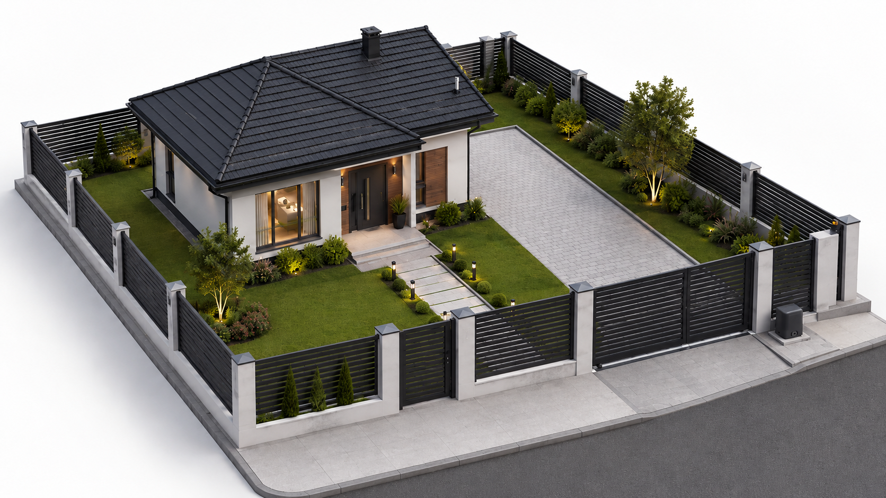
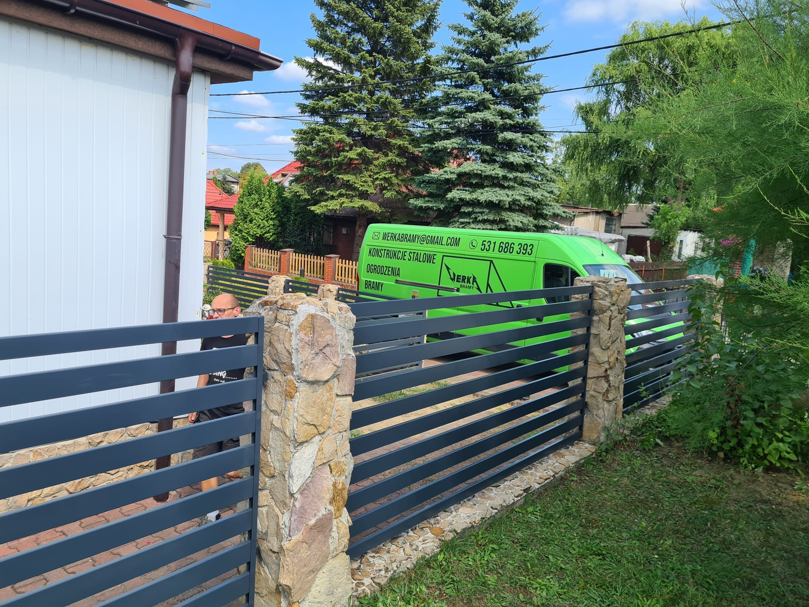
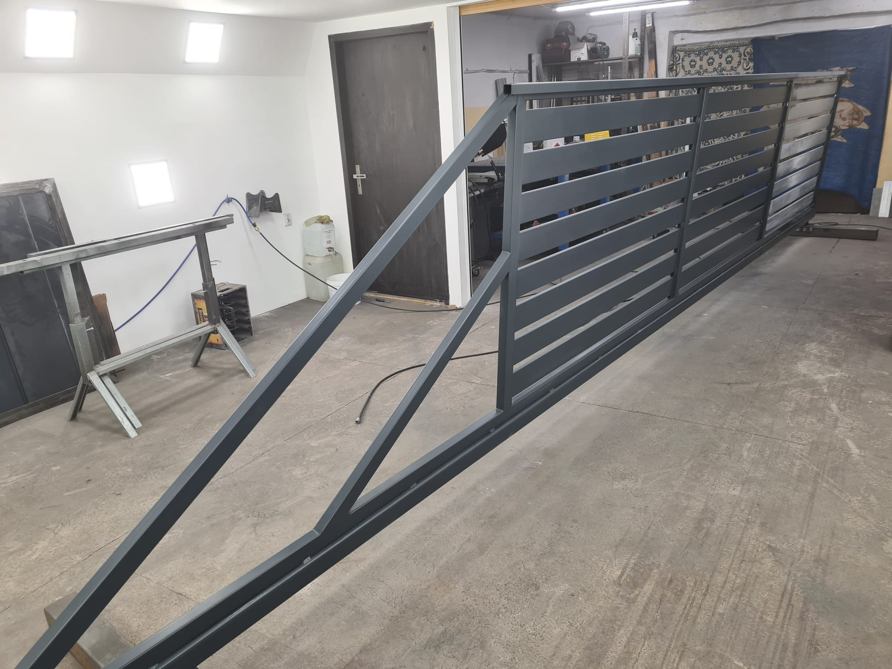
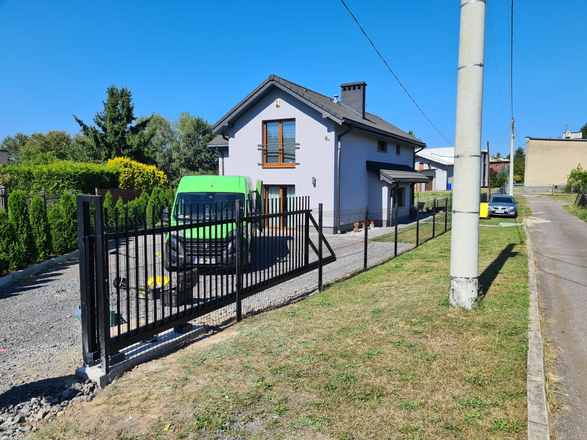
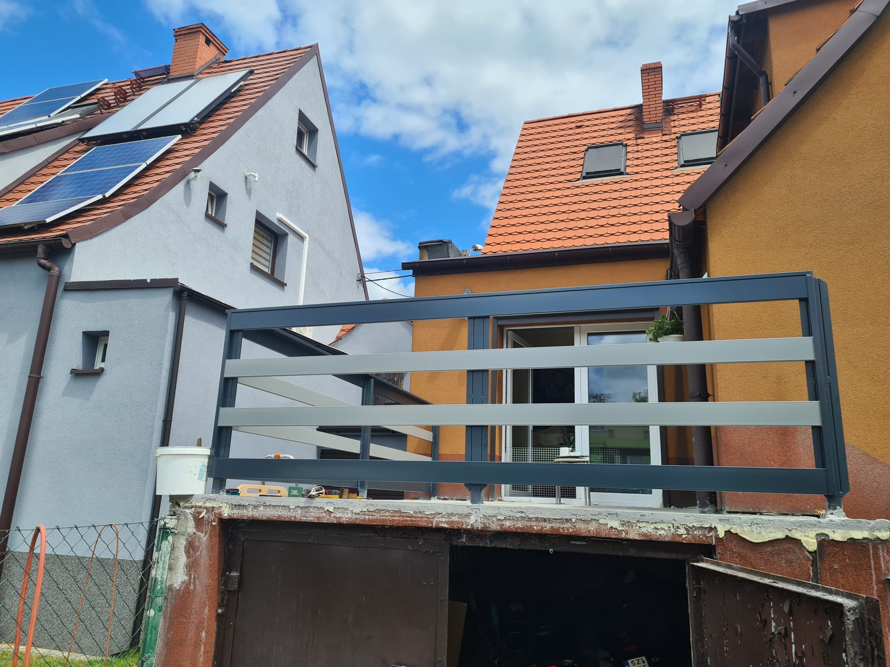
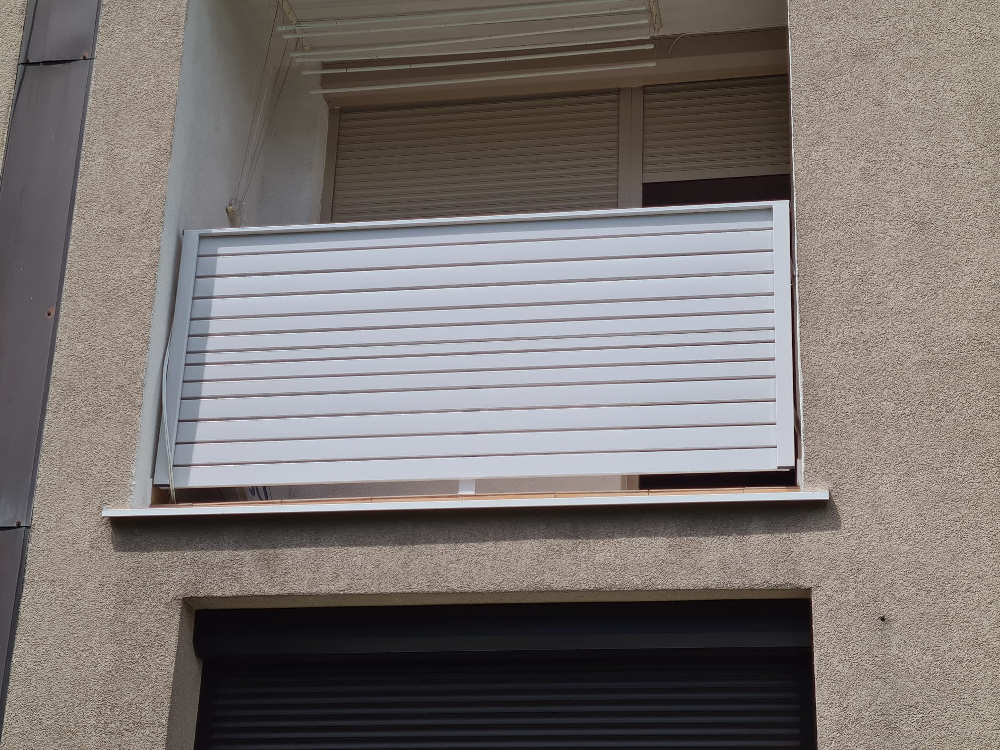
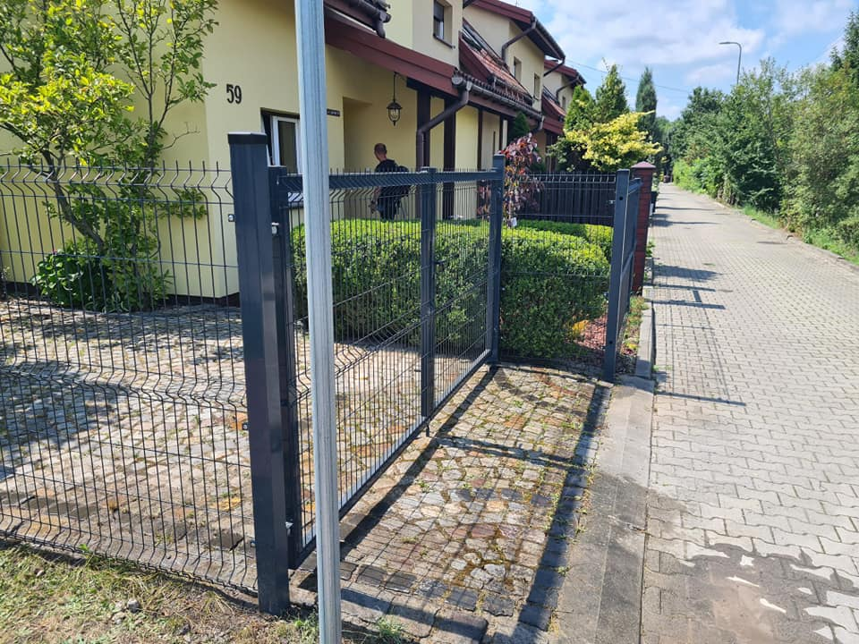

Bramy wjazdowe
Montaż bram przesuwnych, skrzydłowych i dopasowanych do układu posesji.
Werka Bramy zajmuje się montażem bram, ogrodzeń, furtek oraz automatyki. Solidne wykonanie, estetyczny wygląd i rozwiązania dopasowane do domu, firmy lub działki.
Kompleksowe rozwiązania dla posesji prywatnych i firmowych — od bramy, przez furtkę i ogrodzenie, po automatykę oraz elementy dodatkowe.
Montaż bram przesuwnych, skrzydłowych i dopasowanych do układu posesji.
Nowoczesne ogrodzenia panelowe, stalowe i poziome systemy ogrodzeniowe.
Furtki wejściowe, dojścia do posesji i spójne wykończenie frontu domu.
Napędy do bram, sterowanie, komfortowe otwieranie oraz wygodne użytkowanie.
Kliknij w punkty i zobacz, które elementy można wykonać przy jednej realizacji.

Nowoczesne ogrodzenie dopasowane do stylu budynku i działki.
Brama przesuwna lub skrzydłowa wykonana pod konkretny wjazd.
Estetyczne wejście na posesję, spójne z resztą ogrodzenia.
Automatyka bramy, wygodne sterowanie i codzienny komfort.

Dobrze wykonana brama i ogrodzenie to nie tylko zabezpieczenie działki, ale też wizytówka całego domu. Dlatego liczy się dokładny montaż, estetyczne dopasowanie i wygoda użytkowania na co dzień.
✓ bramy i ogrodzenia na posesje prywatne
✓ montaż automatyki do bram
✓ dopasowanie rozwiązania do układu działki
✓ estetyczne wykonanie frontu posesji
Zdjęcia realizacji, bram, ogrodzeń i elementów montowanych u klientów.





Napisz lub zadzwoń i opowiedz, co jest do wykonania. Na tej podstawie można ustalić zakres prac i przygotować konkretną propozycję.